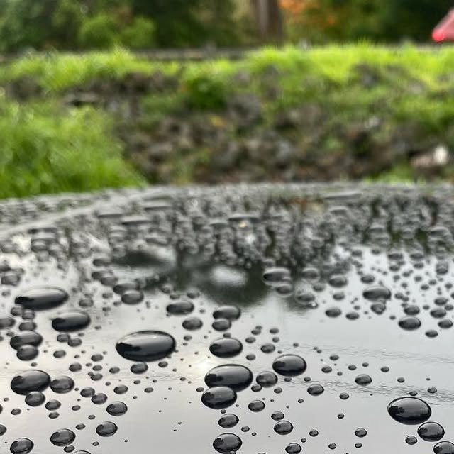
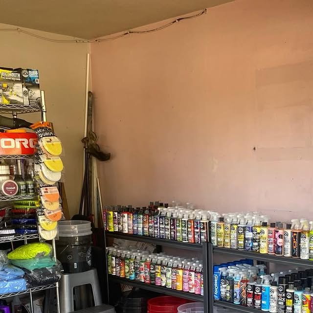
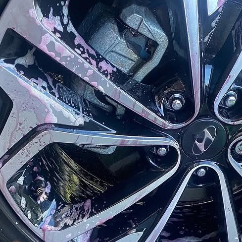
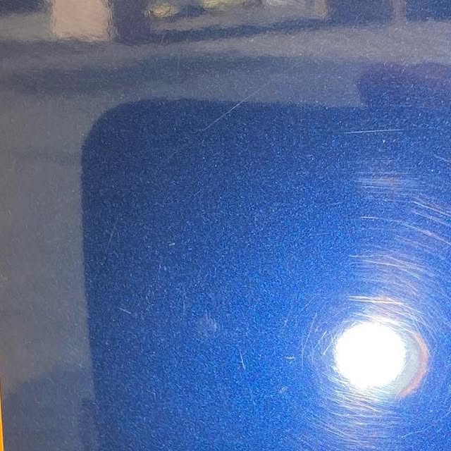
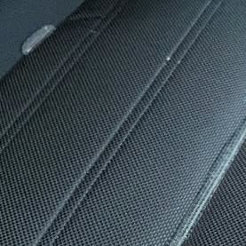
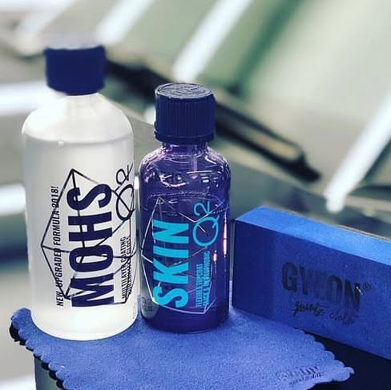

Lavado profesional
Lavado completo con tecnica profesional, base de todo buen detailing.

TOA ALTA - CORRECCION Y CERAMICO
Lavado profesional, descontaminacion quimica y manual, correccion de pintura y recubrimiento ceramico GYEON. Trabajo de horas, resultado de anos.
(939) 332-8967 - Toa Alta, PR
Quienes somos
AMR Detailing PR trabaja la pintura como se debe: lavado profesional, descontaminacion quimica y manual, un paso de pulido y recubrimiento ceramico GYEON. Tambien encuentras productos profesionales Gyeon y Chemical Guys para mantener ese brillo en tu casa.

Lo que hacemos
Lavado completo con tecnica profesional, base de todo buen detailing.

Iron remover y descontaminacion manual antes de pulir o sellar: ningun auto nuevo esta libre de contaminacion.

Un paso de pulido que remueve micro rayas y devuelve profundidad a la pintura.

Sellado ceramico GYEON Can Coat para brillo extremo y proteccion duradera.

Hidratacion y restauracion de plasticos con GYEON Trim, para que vuelvan a verse nuevos.

Inventario de productos Gyeon y Chemical Guys: pregunta por tu favorito antes de que se acabe.
Trabajos reales
Asi de facil
Escribenos por WhatsApp y separa tu espacio.
Lavado y descontaminacion para ver el estado real de la pintura.
Pulido y recubrimiento ceramico GYEON, con entrega lista para brillar.
Preguntas frecuentes
Es remover hierro y contaminantes pegados a la pintura, con quimicos y a mano, antes de pulir o sellar. Es el paso que hace que el resto funcione.
Depende del producto aplicado. En AMR trabajan recubrimientos GYEON Can Coat: escribenos y te orientamos segun tu auto.
Si, tienen inventario de productos profesionales Gyeon y Chemical Guys. Pregunta por tu favorito.
En el area de Toa Alta, cerca de la rotonda del pueblo. Coordinamos por WhatsApp.
Cotiza ahora
Llena el formulario y se abre WhatsApp con tu solicitud lista para enviar.
O escribenos directo: WhatsApp - (939) 332-8967